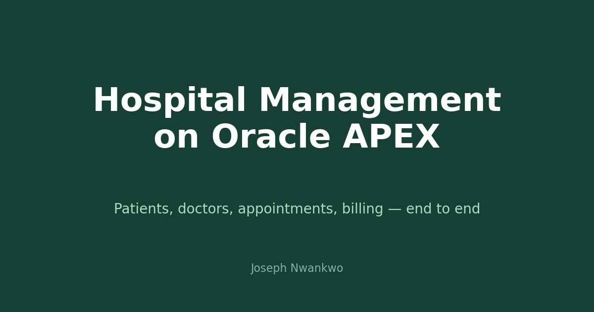

At a glance: Oracle APEX · Oracle Database · SQL & PL/SQL · modules: patients, doctors, appointments, treatments, departments, rooms, invoicing · secure login with role-based access.
The problem.
A hospital's daily work — admissions, scheduling, treatments, billing — breaks down when records live on paper or in disconnected spreadsheets. One system, one source of truth.
What was built.
Full CRUD for patient records and doctor profiles. Appointment scheduling linking patients to doctors and rooms. Treatment records tied to visits. Department and room management. Invoice generation from treatments. Secure login with role-based access so staff only see what their role allows.
The stack.
Oracle Database holds the relational schema; Oracle APEX provides the application layer — forms, reports, and workflows without a separate frontend framework. Business logic lives in SQL and PL/SQL close to the data, where it belongs.
Enterprise software does not have to be exotic. A well-modeled relational database plus a low-code application layer can run real operations.
What it is good for.
Operations: admissions to discharge in one system. Auditability: every record traceable. Foundation: the schema is ready for analytics — length of stay, bed occupancy, billing trends.
What is next.
Dashboards on top of the operational data: occupancy rates, doctor utilization, revenue by department — the analytics layer this system was designed to feed.